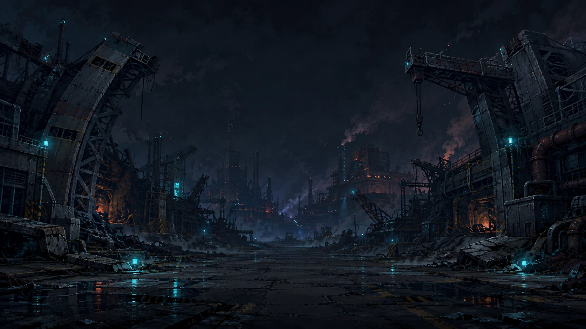

ROWAR
ROBOT · WAR
YOUR MACHINES. YOUR FRONTLINE.
STRATEGY DRIVES
A STRONGER TOMORROW.
ROWAR
ROBOT · WAR
기체를 뽑고, 정비하고, 내보낸다.
시작하기
›
계정 · 로그인
계정으로 이어하기
다른 기기의 진행 상황을 불러옵니다
아이디
비밀번호
로그인
새 계정 만들기
연결 중…

전장의 새로운 시대
지휘관이여, 기체를 넘어 더 큰 전장을 지배하라.
게임 설명 보기
›
ROWAR
ROBOT · WAR
홈
격납고
뽑기
대전
파견
점령
시련
랭킹
더보기
0
0
◆
—
정제 코어 정제하기
0
···
기체를 정비하고 선택한 거점으로 돌아가세요.
점령으로 복귀 →